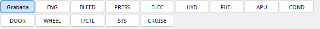

Ejemplo de interfaz con datos sintéticos de demostración; no es un vuelo real.
Los botones eligen ENG, BLEED, PRESS, ELEC, HYD, FUEL, APU, COND, DOOR, WHEEL, F/CTL, STS y CRUISE. Solo cambian la vista local, no controlan MSFS. Los valores siguen el mismo tiempo.
Recorded recupera la página mostrada entonces si se grabó su identificador. Al desplazar el tiempo puede cambiar automáticamente. Sin esa variable la página histórica es desconocida. Los capítulos hijos muestran cada página por separado.
El pie contiene TAT, SAT, hora y peso disponibles. Los datos de addon ausentes quedan como guiones. Desacople ECAM para verlo al lado del PFD.
